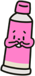

내일은 소중한 친구의 생일이야
그래서 마을에서 가장 큰 가게에 왔는데
친구가 좋아할 특별한 선물이 없어..
가게에 없다면 내가 직접 만들어 볼까?
그래서 마을에서 가장 큰 가게에 왔는데
친구가 좋아할 특별한 선물이 없어..
가게에 없다면 내가 직접 만들어 볼까?

폐품 전시관으로 이동!우리 섬에 이런 길이 있다니...
바닥에 있는 물감들을 주워보면, 좋은 생각이 떠오를 것 같아!
"아이와 함께 친구에게 줄 소중한 선물을 찾아보아요!"
이번 전시는 무인도에 사는 키티가 친구의 생일 선물을 찾기 위해 길을 떠나는 이야기로 꾸며져 있습니다.
부모님께서는 아이가 길 위에서 만나는 다양한 작품들을 충분히 느끼고 즐길 수 있도록 대화의 길잡이가 되어주세요.
1. 관람 준비: 아이가 상황에 몰입할 수 있도록 길잡이 역할을 해주세요!
"OO아, 키티가 친구에게 줄 선물을 못 찾아서 슬퍼하고 있대. 우리 같이 길을 따라가면서 반짝이는 보물들을 모아볼까? 어떤 멋진 것들이 숨어있을까?” 라고 질문해보아요.
2. 관람 중: 함께 작품을 통한 미적체험하기
전시관(자연물, 찰흙, 그림, 폐품)을 둘러보며 아이의 호기심을 자극해 주세요.
아이가 작품 속 한 가지 모양이나 색깔에 푹 빠져 있다면, 충분히 감상할 때까지 기다려 주세요.
아이의 말에 귀 기울여 주세요: 아이가 엉뚱한 대답을 하더라도 "그럴 수도 있겠다!"라며 맞장구쳐 주시는 것이 좋은 교육입니다.
구체적인 칭찬을 해주세요. "잘했어"보다는 "보라색 꽃잎과 갈색 잎을 섞어서 날아다니는 나비를 만들었다고 창의적으로 생각했구나!"처럼 구체적으로 읽어주세요.
작품별 "이렇게 질문해 보세요!" 등 상호작용 꿀팁을 참고하여 아이와 원활하게 소통해주세요!
아이가 눈에 보이는 것에 집중하도록 도와줘요! "이건 어떤 느낌이야?"처럼 아이가 지금 보고 느끼는 감각적인 부분에 대해 질문해 주세요.
설렘을 담은 목소리로 반응해주세요! 선물을 찾아가는 과정이 동화책처럼 느껴지도록 부모님께서도 함께 설레는 목소리로 반응해 주세요.
영아(감각운동기): 직접 만지고 냄새 맡는 등 감각적 탐색이 중요한 시기이므로, "우와, 찰흙이 말랑말랑하네!"와 같이 사물의 물리적 성질을 감각 언어로 풍성하게 들려주며 세상과 소통하도록 도와주세요.
유아(전조작기): 상상력이 폭발하고 사물에 생명을 부여하는 물활론적 사고가 나타나므로, "이 그림 속 나비는 지금 어디로 날아가고 싶을까?"와 같이 아이의 자기중심적 상상력을 자극하는 질문으로 풍성한 이야기를 이끌어내 주세요.
3. 관람 후: 아이가 미적체험의 여운이 계속되도록 스토리를 같이 마무리해주세요!
"드디어 무인도의 보물들을 다 모았어! OO이가 정성껏 골라준 덕분에 친구가 정말 행복해할 거야. 오늘 찾은 보물 중에서 가장 기억에 남는 건 뭐야?" 와 같은 칭찬을 담은 질문도 좋습니다.
미술관을 돌아보고 재밌었다면, 표현하고 만들어봐요!
부모님과 함께 만든 작품 사진을 찍어서 아래의 인스타 링크로 공유해주시면 다른 아동들과 함께 감상할 수 있습니다!
어린이 보물 미술관 인스타그램 주소: https://www.instagram.com/kids_treasure_museum?igsh=cGc4Y3ZyOHJ5bDA2&utm_source=qr
인스타그램에 들어가시면 다양한 예시 작품과 미술관의 소식을 보실 수 있습니다!